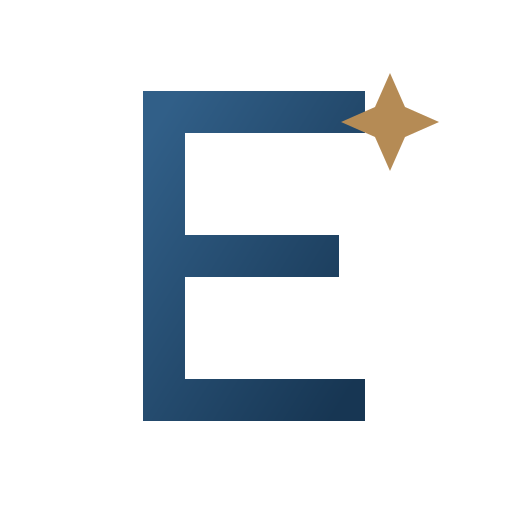
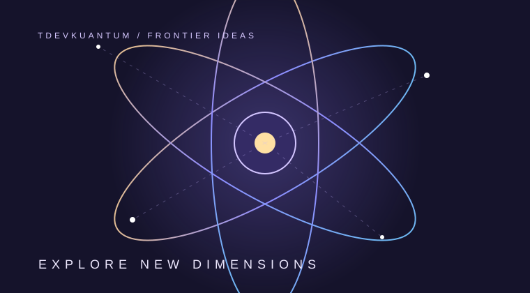
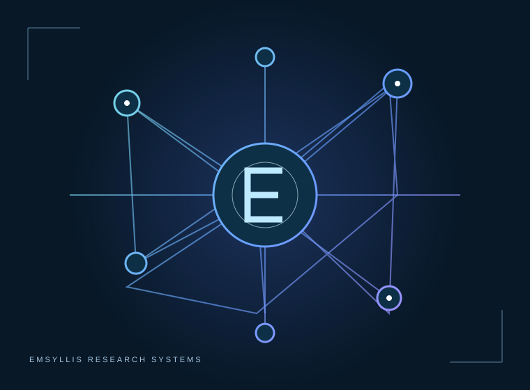

✳
Yapay zekâ
Dil modelleri, akıllı sistemler ve insan odaklı dijital deneyimler.
SCIENCE × TECHNOLOGY × INTELLIGENCE
Merakla başlayan fikirleri; araştırma, yazılım mühendisliği ve cesur teknoloji projeleriyle gerçeğe yaklaştırıyoruz.


EMSYLLISEMSYLLIS; farklı teknoloji disiplinlerini tek bir çatı altında buluşturan bağımsız bir araştırma ve inovasyon girişimidir. Her projemiz ayrı bir probleme odaklanır; ortak noktamız merak, nitelikli üretim ve güvenilir ilerlemedir.
Teknolojiyi yalnızca takip etmiyor; öğreniyor, araştırıyor ve yeni çözümler geliştirmek için kullanıyoruz.
Dil modelleri, akıllı sistemler ve insan odaklı dijital deneyimler.
Ürünler, dijital altyapılar ve gerçek ihtiyaçlara odaklanan çözümler.
Doğrulama, güvenlik farkındalığı ve daha güvenilir dijital alanlar.
Kuantum teknolojileri ve yeni nesil hesaplama fikirleri üzerine keşif.
 01 / ARTIFICIAL INTELLIGENCE↗
01 / ARTIFICIAL INTELLIGENCE↗Yapay zekâ destekli dijital ürün ve araç ekosistemi.
 02 / DIGITAL TRUST↗
02 / DIGITAL TRUST↗Alan adı doğrulama ve dijital güven odağında geliştirilen proje.

03 / FRONTIER TECHNOLOGY↗Kuantum teknolojileri ve yeni nesil hesaplama fikirleri.
 04 / MODEL RESEARCH↗
04 / MODEL RESEARCH↗Türkçe odaklı dil modeli ve güvenli eğitim altyapısı araştırması.

RESEARCH / DEVELOPMENT / ITERATIONAETHRION-LLM çalışmaları; veri kalitesi, lisans doğrulaması, model altyapısı, güvenli eğitim ve kaldığı yerden devam edebilen üretim süreçleri üzerine ilerliyor.
Büyük ölçekli çok modlu mimariler uzun vadeli araştırma hedefidir; tamamlanmış ürün veya mevcut kapasite iddiası değildir.
Araştırma yaklaşımını incele ↗Şeffaflık, güvenlik ve sürdürülebilir ilerleme; geliştirdiğimiz her projenin temelidir.
Yaklaşımımızı keşfet ↗Proje, araştırma ve iş birliği için bizimle iletişime geç.